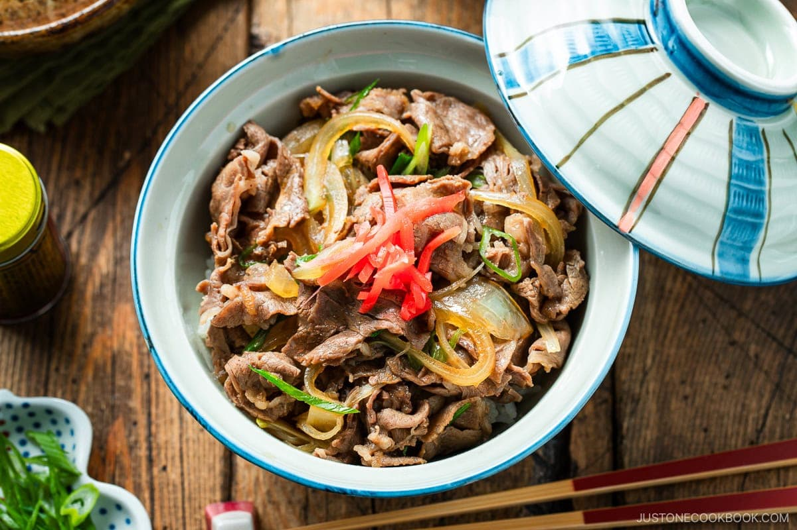

Home
Japanese Beef Rice

Description
Gyudon is a popular Japanese beef dish, consisting of tender onions and thinly-sliced beef over rice.
It's simple and nutrient-rich, perfect for a weeknight meal. Its layers of umami flavor makes it well-loved by families.
Ingredients
- 340 g thinly sliced beef
- 0.75 onion
- 1.5 green onion
- 180 ml dashi - Japanese soup stock
- 3 tbsp sake - or water
- 3 tbsp mirin - or sake/water + sugar
- 4.5 tbsp soy sauce
- 1.5 tbsp sugar
- 3 servings cooked short-grain Rice
Steps
- Thinly slice onion and green onion.
- Cut semi-frozen beef into pieces.
- Add dashi, sake, mirin, soy sauce, and sugar to a cold frying pan.
- Separate the layers of sliced onion and spread them throughout the cold broth.
- Separate the slices of beef and distribute on top of the onions.
- Cover pan with a lid. Turn on heat to medium and start cooking.
- Once simmering, turn down the heat to simmer and cook, covered, for 3-4 minutes.
- While simmering, open lid and skim off scum adn fat from broth.
- Sprinkle green onions on top and cook covered for one minute.
- Divide 3 servings cooked rice into large bowls. Drizzle some sauce on top of rice.
- Put the beef and onion on top of rice. Drizzle remaining sauce on top.